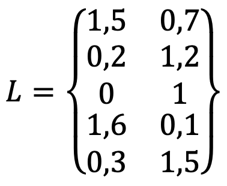
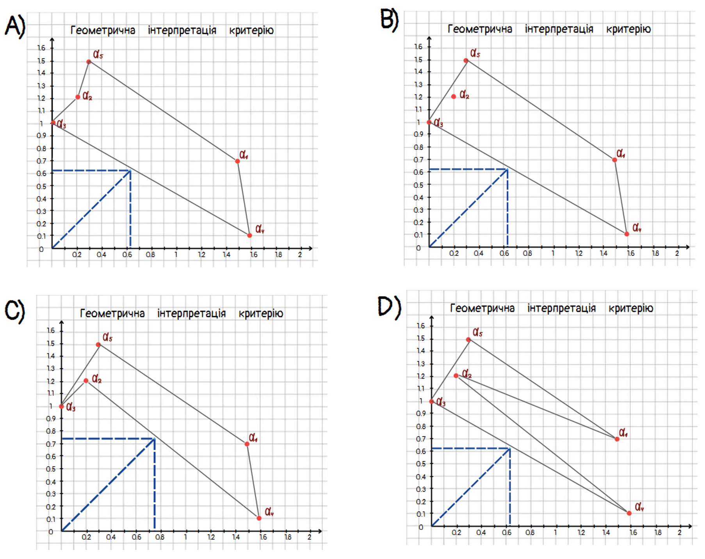
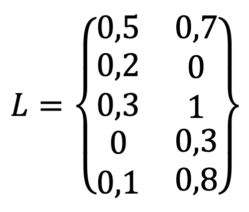
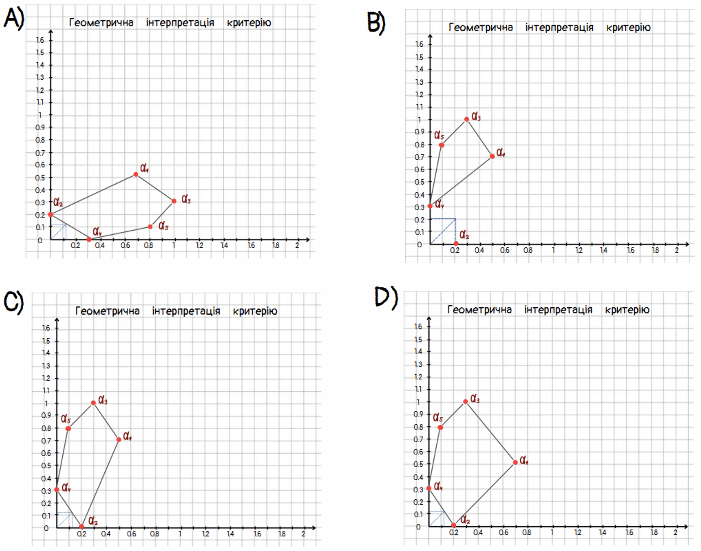
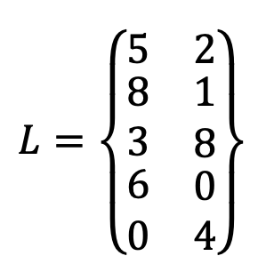

Тести
Пройдіть тестування, щоб перевірити свої знання з теми «Мінімаксний критерій знаходження рандомізованих розв’язків в задачах теорії прийняття рішень»
1. Для чого використовується мінімаксний критерій у теорії прийняття рішень?
2. Яка роль мінімаксного критерію у фінансових ринках?
3. Яке поняття пов'язане з мінімаксним критерієм у теорії прийняття рішень?
4. Як сценарний аналіз допомагає у застосуванні мінімаксного критерію?
5. В яких сферах застосовується мінімаксний критерій?
6. Яка роль мінімаксного критерію у задачах машинного навчання?
7. Чому важливо враховувати теорію ймовірностей у мінімаксному підході?
8. Як мінімаксний підхід допомагає в міжнародних відносинах?
9. Продовжіть речення: Дане рівняння є _______
10. Геометричне місце точок, що відповідають рандомізованим розв’язкам, називають _______
11. Щоб знайти рандомізований розв’язок за мінімаксним критерієм, необхідно:
12. Завдання на відповідність .Встановіть правильну послідовність алгоритму пошуку рандомізованого розв’язку за мінімаксним критерієм.
13. На якому з рисунків зображена правильна геометрична інтерпретація мінімаксного критерію для даної матриці втрат?
 14. На якому з рисунків зображена правильна геометрична інтерпретація мінімаксного критерію для даної матриці втрат?
 15. Матриця втрат має наступний вигляд:
Знайти рандомізований розв’язок за мінімаксним критерієм.